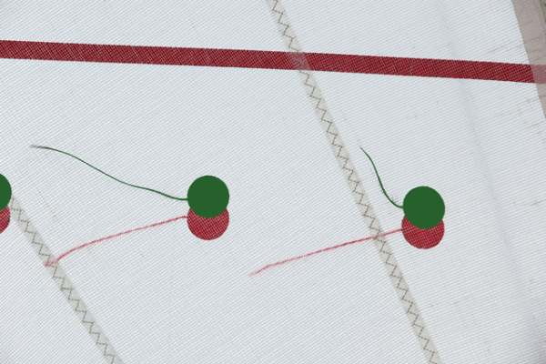

Module 5
Sail Trim
Discover what sailing is, how sailboats move, and why sailing has fascinated people for thousands of years.
Learning Objectives
After completing this lesson, you should be able to:
- Understand how sail trim affects speed.
- Recognize the signs of an over-trimmed or under-trimmed sail.
- Use the mainsheet to control sail shape.
- Use telltales to judge proper trim.
The Mainsheet
The mainsheet is the rope used to control the position of the mainsail. Pulling the mainsheet brings the boom closer to the centerline of the boat. Easing the mainsheet allows the boom to swing farther away.
Pull the sail in when sailing closer to the wind. Ease the sail out as you sail away from the wind.

Finding the Sweet Spot
A sail should neither flap excessively nor be pulled in tighter than necessary. The correct trim is usually found by slowly easing the sail until it just begins to luff, then trimming it in slightly until the luffing stops.
Telltales
Telltales are small pieces of yarn attached to the sail. They show how smoothly the air is flowing over the sail.
Both Streaming
Airflow is smooth. Sail trim is correct.
Inside Telltale Droops
The sail is trimmed in too tightly. Ease the mainsheet slightly.
Outside Telltale Droops
The sail is too loose. Trim the mainsheet in.
Common Mistakes
- Pulling the sail in as tightly as possible regardless of the point of sail.
- Ignoring telltales and steering by guesswork.
- Trimming the sail before the boat has accelerated.
- Constantly moving the mainsheet instead of making small adjustments.
Key Takeaways
- The mainsheet controls the angle of the sail.
- Trim the sail according to your point of sail.
- Use telltales as your primary guide.
- Small adjustments often produce the biggest gains.
- A properly trimmed sail is fast, balanced, and quiet.